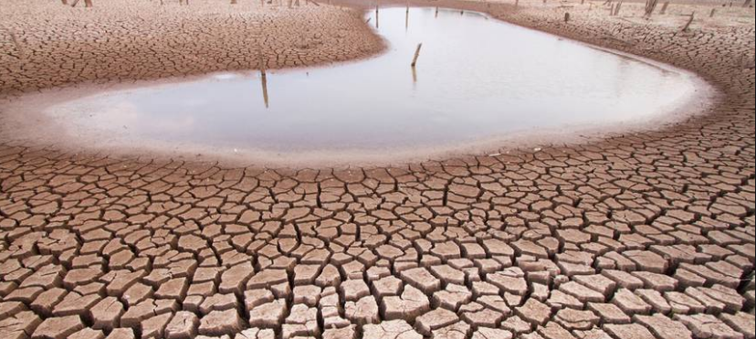

The Global Water Crisis

Breyer, Melissa. “The World Water Crisis by the Numbers.” TreeHugger, Treehugger, 21 Mar. 2019, www.treehugger.com/environmental-policy/world-water-disaster-numbers.html.
Water is important to every living human on Earth and people have noticed. Without water, the human race would not last very long. Governments have been doing their best to solve this growing problem, but at what expense? Women and children are suffering as they attempt to collect water, either from the lost ability of an education or from sanitation issues. Collecting water becomes more difficult as the population increases. The California drought forced Californians to take the issue seriously and attempt to save the amount of water they waste, it is time this behaviour became more common.
About Water.org - Learn About Our Water NGO.
Water.org, water.org/about-us/.